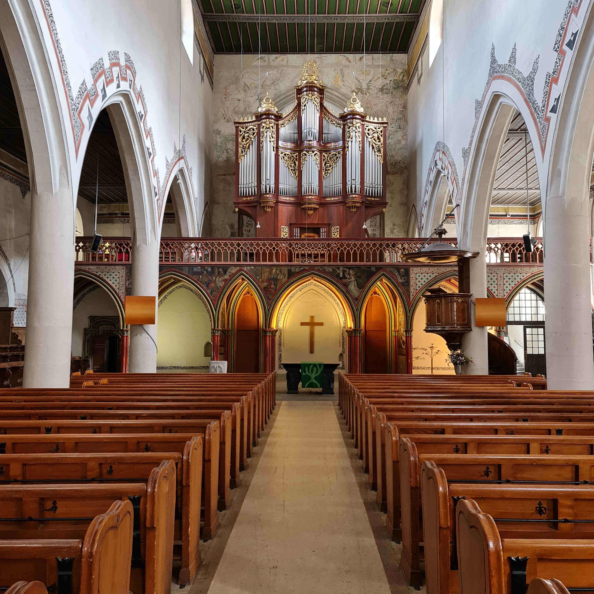

Bern, wo heute gut drei Mal so viele reformierte wie katholische
Einwohner:innen leben, kann man sich nur schwerlich als Klosterstadt
vorstellen. Doch vor 800 Jahren gehörte zur Französischen Kirche ein
prächtiger Konvent, welcher Dominikanermönche und -nonnen beherbergte.
Wie gestaltete sich das Leben im Kloster in der Stadt Bern? Was führte
zur Auflösung des Klosters? Und welche Rolle spielten dabei ein paar
Tropfen rote Farbe?
Die Stadt Bern kann einige prächtige Kirchen vorweisen. Die Französische
Kirche wird jedoch häufig übersehen. Doch hinter dieser bescheidenen
Fassade verbirgt sich ein Stück Berner Kirchengeschichte, das wir nun
etwas genauer betrachten.
Die Französische Kirche in Bern. (Foto: Naemi Zürcher)
Die Entstehung eines Klosters
Zu Beginn hiess die Französische Kirche noch Predigerkirche und war Teil des Predigerklosters. Der Name Predigerkirche kommt daher, weil es die Ordensgemeinschaft der Dominikaner war, welche den Konvent erbauen liess. Die Dominikaner nannte man «Prediger», denn das Predigen, und nicht etwa nur das Rezitieren aus der Heiligen Schrift, war dem Heiligen Dominikus (um 1170–1221), dem Gründer des Ordens, besonders wichtig. Es ist belegt, dass das Kloster ab 1269 bewohnt wurde, das genaue Erbauungsdatum ist hingegen nicht gesichert. Der Zeitraum der Bautätigkeit wird zwischen 1269-1310 angesiedelt. Die Dominikaner waren ein Bettelorden und verlangten von ihren Ordensgeschwistern Armut, Keuschheit und Demut, was im starken Kontrast zum gelebten Glauben der damaligen Kirche stand, die eher für Habsucht, Verweltlichung und Hochmut bekannt war. Durch die Dominikaner erhoffte man sich, nun endlich auf die Nachfolger Jesu blicken zu können, die gemäss Markus 6,8 dem Aufruf folgten, nichts ausser einem Wanderstab auf den Weg mitzunehmen. In Bern nahm der Dominikanerorden zu Beginn konsequent keinen Besitz an und die Mahlzeiten sollen sehr mager gewesen sein. Bei der Besitzlosigkeit spielte wohl auch eine Rolle, dass die Gläubigen sich fürchteten, dass ein etwaiger Besitz enteignet werden könnte. In der Mitte des 14. Jahrhunderts wurde die Besitzlosigkeit jedoch aufgegeben.
Ein besonderer Auftrag
Der Dominikanerorden wurde bereits 1231, also vor der Errichtung des Berner Klosters, aufgrund seiner intellektuellen Leistung, für die er bekannt war, mit der Leitung der Inquisition beauftragt. Bei der Inquisition (von lat. inquisito, Untersuchung) ging es darum, Leute ausfindig zu machen, welche aus Sicht der Kirche Irrlehren verbreiteten, dies zum Schutz der göttlichen Weltordnung und dem ewigen Heil der Gläubigen. Weil dies nicht konsequent genug umgesetzt wurde, beauftragte der Papst persönlich die Bettelorden, insbesondere die Dominikaner, mit der Durchführung von Inquisitionsverfahren, welche sich später auch gegen Zauberei und Hexerei richteten. Die Kirche, die zu dieser Zeit über ungeheure Macht in der Gesellschaft verfügte, geriet immer wieder unter Beschuss. Einflussreiche Einzelne oder Gruppierungen kritisierten ihre Machenschaften oder propagierten eine alternative Ausübung des Glaubens. Die Kirche wollte diese Stimmen zum Schweigen bringen, sodass sich solche Ansichten nicht weiterverbreiten konnten.Als solche Unruhestifter betrachtete die Kirche auch die Waldenser. Die streng sittliche Gemeinschaft, die damals in Bern verbreitet war, tadelte den Klerus und wollte die Hierarchie der Kirche ändern. 1277, als sich die Dominikaner gerade in Bern etablierten, beteiligten sich die Berner Ordensbrüder erstmals an einem solchen Prozess gegen die Waldenser und verurteilten sie zum Feuertod.
Hundert Jahre später sorgte ein weiterer Ketzerprozess für grosses Aufsehen, diesmal gegen einen Stadtbürger namens Löffler aus Bremgarten. Dieser machte sich aufgrund seines «freien Glaubens» schuldig, da er sich gegen die päpstliche Autorität und die Lehre von der Verdienstlichkeit der Werke stellte. Weil die Bekehrungsversuche der Inquisitoren Löffler nicht zum Widerruf zu bewegen vermochten, wurde er 1375 ebenfalls zum Feuertod verurteilt. Dies bezeugt eine Illustration in der Spiezer Chronik des Diebold Schilling aus den Jahren 1484/85.
Der, gemäss den Chronikern, aufregendste Prozess fand einige Jahre später statt und lässt in die damalige Sittlichkeit und tiefe Religiosität der Berner Gesellschaft blicken. Angeklagt wurden eine ganze Reihe von Männern und Frauen, die folgende Lehren verbreiteten: «Weder Papst noch Bischöfe noch Priester haben das Recht Sündenablass zu ertheilen. Wallfahrten haben keine versöhnende Kraft. Die an die Heiligen gerichteten Gebete sind ganz nutzlos. Sowohl die Heiligen als auch die Reliquien können keine Wunder bewirken. Es giebt kein Fegefeuer. Todtenmessen für die Verstorbenen sind kraftlos und daher zu unterlassen. Die Gläubigen sollen sich gegenseitig ihre Sünden bekennen und für dieselben Busse thun.» (Das Dominikaner Kloster in Bern von 1269–1400, 43). Die Beklagten wurden diesmal nicht zum Tode aber zu sehr hohen Geldbussen verurteilt. 
Der Blick in Richtung Lettner vom Kirchenschiff aus. (Bild: Naemi Zürcher)
Der Jetzer-Prozess
Im Jahr 1506 trat ein junger Mann ins Berner Kloster ein, der
unwissentlich den Untergang des Klosters einläutete, noch bevor das die
Reformation in Bern tun konnte. Ganz in dominikanischer Tradition,
verehrte Hans Jetzer (1483–1515) besonders die Jungfrau Maria. Als
Jetzer von Maria-Erscheinungen berichtete und ein Bild der Maria in der
Klosterkirche eine sichtbare rote Träne aufwies, welche von den Brüdern
als Blut identifiziert wurde, bezichtigte man Jetzer der Fälschung und
die rote Träne soll bloss Farbe gewesen sein. Man verdächtigte die
Dominikaner, dass sie mit falschen Erscheinungen für die dominikanische
Theorie, Maria sei wie alle Menschen von der Erbsünde betroffen, werben
wollen. Damit hätten sie dem Ruf der Franziskaner, welche der Theologie
folgten, dass Maria von der Erbsünde ausgenommen sei, geschadet.
Als der Berner Rat davon hörte, leitete er einen langen und
aufsehenerregenden Prozess gegen Jetzer ein, der damit endete, dass
Jetzer verbannt und vier weitere Dominikanerbrüder wegen Betrug auf dem
Scheiterhaufen verbrannt wurden.
Das Ende des Klosters
Schlussendlich war es dennoch der Beschluss des Reformationsmandates 1528, der zur Auflösung des Dominikanerklosters in der Stadt Bern führte. Sieben Mönche traten dabei zum neuen Glauben über. Bereits gut einen Monat später zogen die Patient:innen des Niederen Spitals in das Gebäude des Klosters ein. Das Kloster diente bis zum Bau des Burgerspitals 1742 als Krankenhaus. Aus dem Westflügel wurde später ein Zucht- und Waisenhaus installiert. Danach wurde es unter anderem von französischen reformierten Glaubensflüchtlingen, den Hugenotten, genutzt, welche dort verschiedenartige Textilien anfertigten. 1899 musste der Konvent dem Stadttheater Platz machen und wurde abgerissen. Heute heisst die Predigerkirche Französische Kirche, weil sie der französischsprechenden Bevölkerung Berns, zu Beginn vor allem übergesiedelten Waadtländern, als Kirche diente.

bildunterschrift

bildunterschrift
autor
Weitere Artikel von {{ author.author }} finden Sie hier:
Zur Vertiefung:
- textb4link (Leerzeichen am Schluss) text